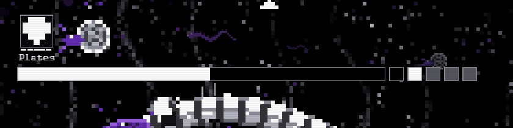

The serpent's bar taking blows, losing what they took, refilling at a break and closing back up after a meal. Every pane runs the same 14-second fight: a stream of small blows, a bigger one, the blow that breaks the defense, the refill, more blows on the next defense, then a meal landing and the heal coming back in.
A mock drawn from plain shapes, not the game. The bar is drawn at its real size in screen pixels (400 by 14, its rim, its four phase pips) and in its real tones. It cannot show: the numbers flying up into the bar (left out so the bar is all you watch), the coil under it, the status row over it, the fight's real pace (blows here are at the game's scale, a few pixels each, but packed closer so the loop goes somewhere), and the phone, where the bar is the same pixels on a smaller glass. The recoil on a blow (the bar knocked up 4 or 8 pixels in two held poses) is as built and is the same in every pane.

Eight seconds of the deep-numbers scene, frame-exact at a tenth of a second. Watch the meal: the fill jumps most of the bar's length in one frame and the jump is painted purple until the next blow wipes it.
Why today's bar reads as jank (render/serpentbar.js):
Math.round(BAR_W * left). A blow is
0.2 to 1.5 per cent of a defense, so the fill moves by a pixel, or none, or two, at whatever frame the
rounding tips. Nothing eases it.hitAt = t), so under a stream of blows it
never moves, then the moment the stream pauses it drains in a straight line at a whole bar a second.land), so
the fill jumps up in a frame. The purple band then stays until the next blow resets low,
and vanishes in a frame.BREAK_FILL_STEPS), a different motion from
everything else on the bar.